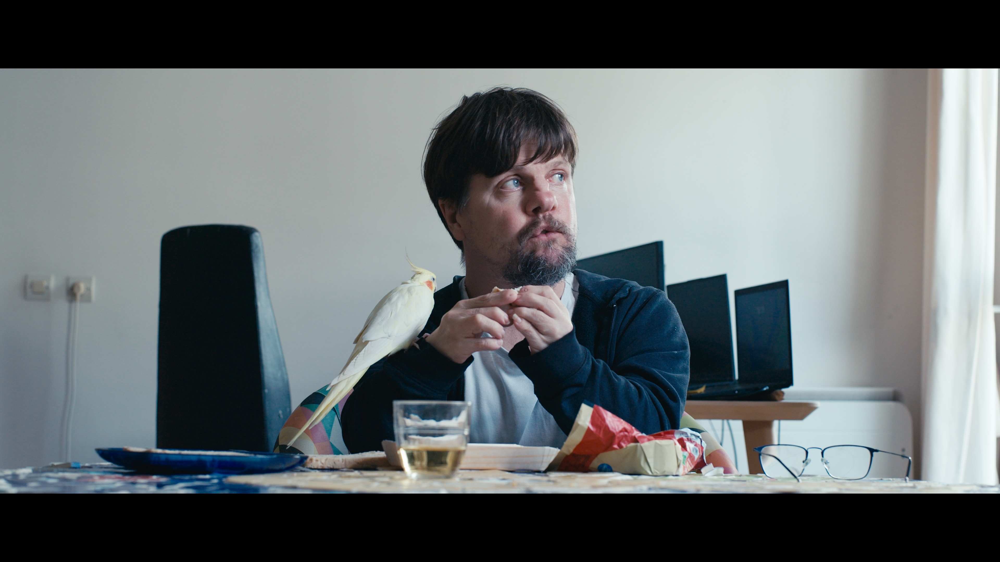
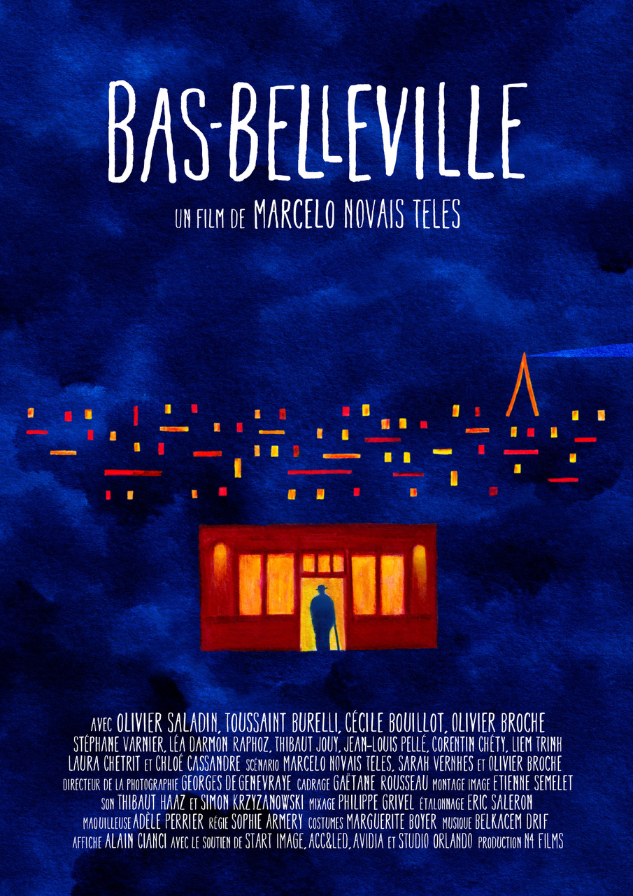
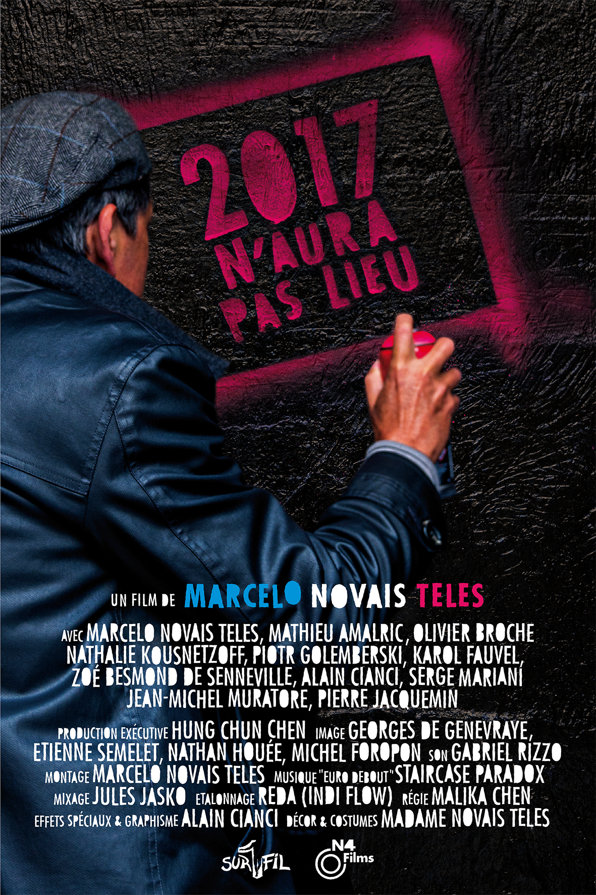
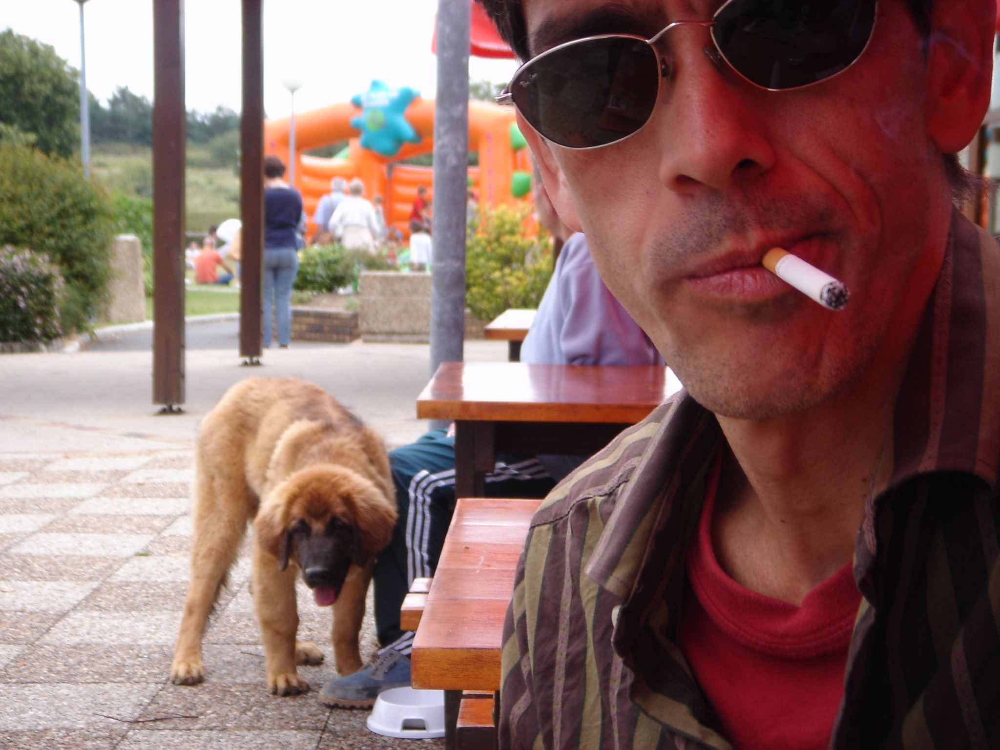
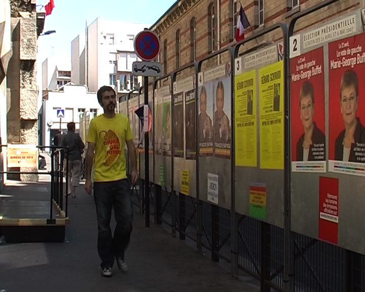
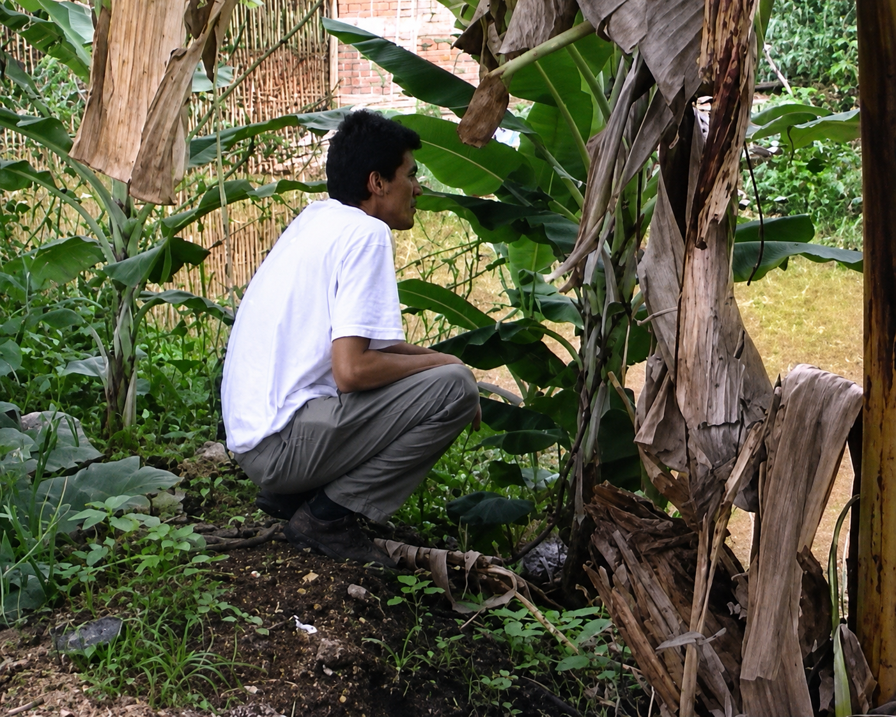
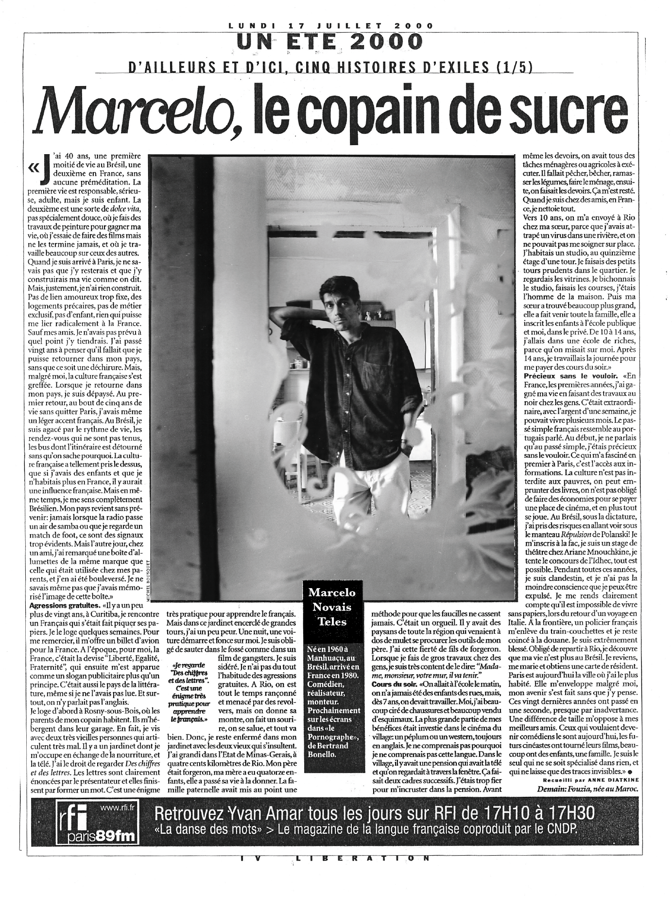
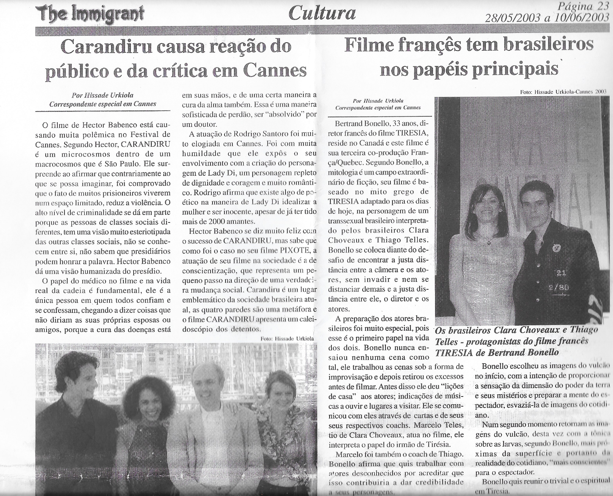
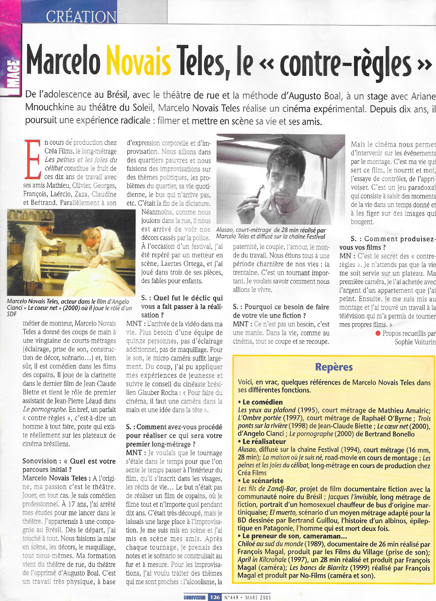
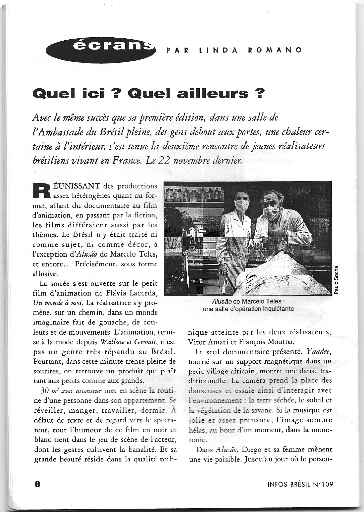

2026 · COURT MÉTRAGE · 28 MIN
RÉALISATEUR · SCÉNARISTE · MONTEUR IMAGE
« Filmer pour moi est un acte déclencheur de vérité. »
→DÉFILER

01 — À PROPOS
« Filmer pour moi est un acte déclencheur de vérité. Quand la vie tend vers la fiction, l’invraisemblable devient réel. Paradoxalement, si dans la vie nous sommes continuellement en représentation, au cinéma nous sommes toujours en pause. Et, comme par magie, c’est une machine qui déclenche et enregistre un laps de temps. Un instant où la présence l’emporte sur la représentation et justifie l’existence. Je ne fais pas du cinéma. Je suis un faiseur de films. »
Fortement influencé par le cinéma ethnographique de Jean Rouch — dont il revendique la filiation — et par le cinéma intimiste d’Alain Cavalier, Marcelo Novais Teles considère la fiction non pas comme l’opposé du réel, mais comme l'un des moyens par lesquels le réel peut se révéler. Dans ses films, la fiction se nourrit du réel, tandis que le réel devient un espace de jeu. De cette circulation permanente naît un langage cinématographique singulier, à la fois libre et fécond.
À l’image de ses influences, ses films prennent appui sur la vie de personnes bien réelles. De leur quotidien naissent des récits où se dessinent l’amitié, l’identité et la solitude.
FILMOGRAPHIE ↗02 — FILMOGRAPHIE

2026 · COURT MÉTRAGE · 28 MIN

2024 · COURT MÉTRAGE · 27 MIN

2017 · DOCU-FICTION · 90 MIN

2017 · COURT MÉTRAGE · 20 MIN

1987 / 2008 · DOCU-FICTION · 52 MIN

2007 · COURT MÉTRAGE · 8 MIN

2007 · COURT MÉTRAGE · 10 MIN

1992 / 2005 · DOCUMENTAIRE · 35 MIN

1987 / 2005 · FICTION · 13 MIN
03 — PRESSE







04 — COLLABORATIONS
05 — CONTACT
PARIS, FRANCE
DISPONIBLE À L'INTERNATIONAL